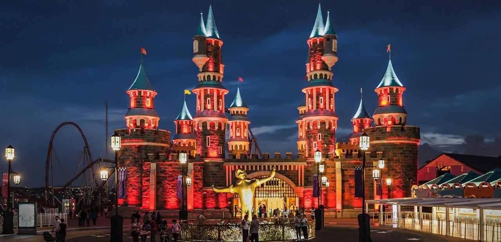
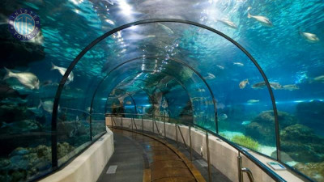
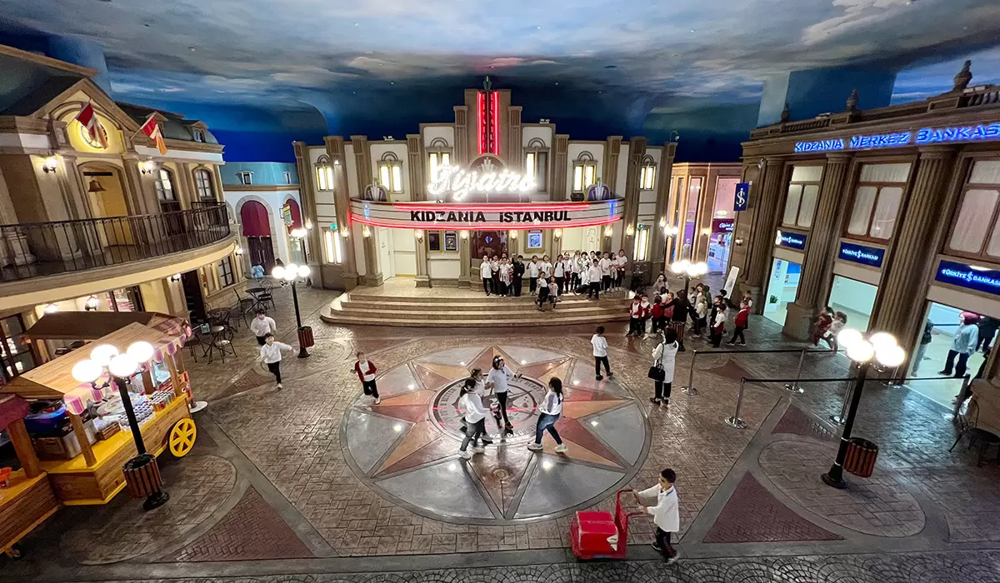
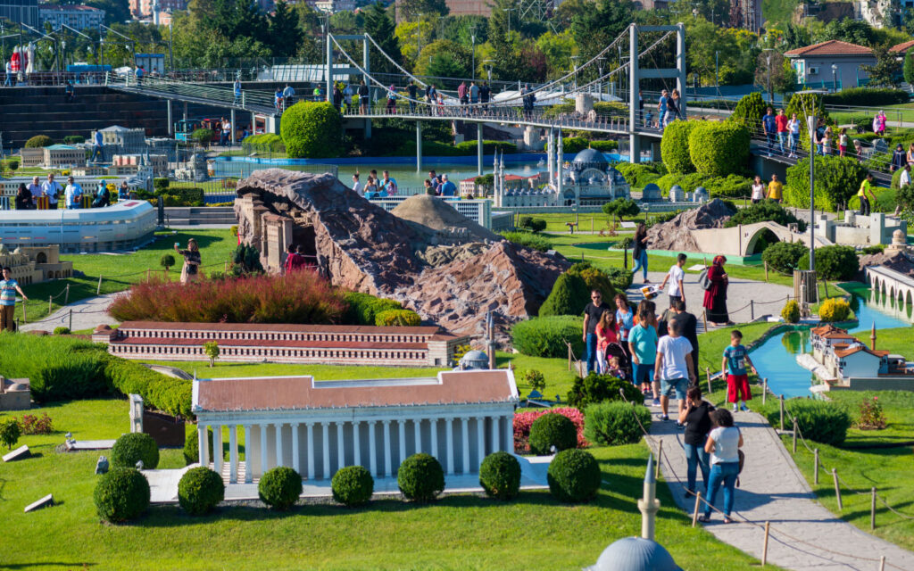
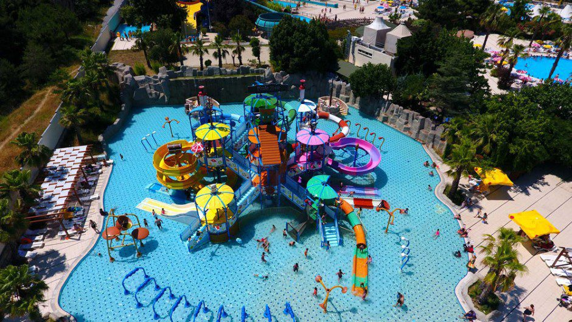

İstanbul’da Eğlence ve Aile Aktiviteleri

Vialand (Isfanbul Tema Park)
Türkiye'nin ilk tematik parkı olan Vialand, hem yetişkinlere hem de çocuklara hitap eden eğlence üniteleriyle dolu büyük bir kompleks.
Adres: Yeşilpınar, Şht. Metin Kaya Sk. No:11, Eyüpsultan/İstanbul
Giriş: Ücretli (Online bilet avantajlı)

İstanbul Akvaryum
Dünyanın tematik akvaryumları arasında yer alan İstanbul Akvaryum, çocuklar için eğitici ve eğlenceli bir deneyim sunar.
Adres: Şenlikköy, Yeşilköy Halkalı Cd. No:93, Bakırköy/İstanbul
Giriş: Ücretli (Tam: 295 TL civarı)

KidZania İstanbul
Çocukların farklı meslekleri deneyimleyebileceği eğitici bir eğlence merkezi. İç mekanda güvenli ortamda oyun oynayarak öğrenme imkânı sunar.
Adres: Acıbadem, Akasya AVM, Üsküdar/İstanbul
Giriş: Ücretli (Yaşa göre değişken)

Miniatürk
Türkiye’nin tarihi yapılarının minyatür modellerinin yer aldığı bu açık hava müzesi, hem öğretici hem eğlenceli bir gezidir.
Adres: Sütlüce, İmrahor Cd. No:7, Beyoğlu/İstanbul
Giriş: Ücretli (Tam: 150 TL civarı)

İstanbul Oyuncak Müzesi
1700'lerden günümüze oyuncak tarihine yolculuk. Çocuklar kadar yetişkinler için de nostaljik bir deneyim sunar.
Adres: Göztepe, Dr. Zeki Zeren Sk. No:17, Kadıköy/İstanbul
Giriş: Ücretli (Tam: 120 TL)

Aqua Club Dolphin
Yaz aylarında ailece eğlenebileceğiniz dev kaydıraklar, havuzlar ve etkinlik alanlarıyla İstanbul’un en büyük su parklarından biridir.
Adres: Bahçeşehir 2. Kısım, Bahçekent Blv. No:4, Başakşehir/İstanbul
Giriş: Ücretli (Sezonluk fiyatlandırma)